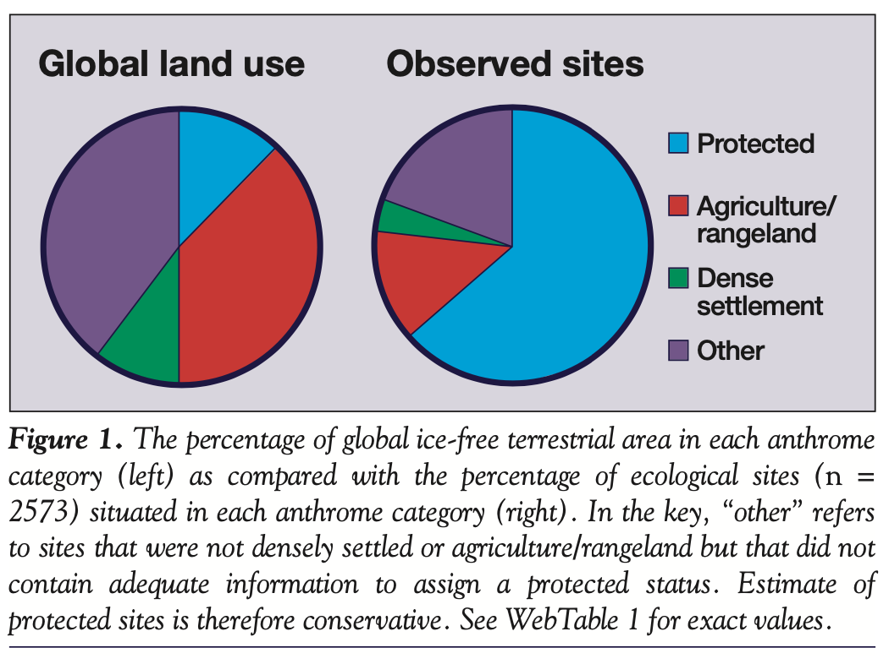
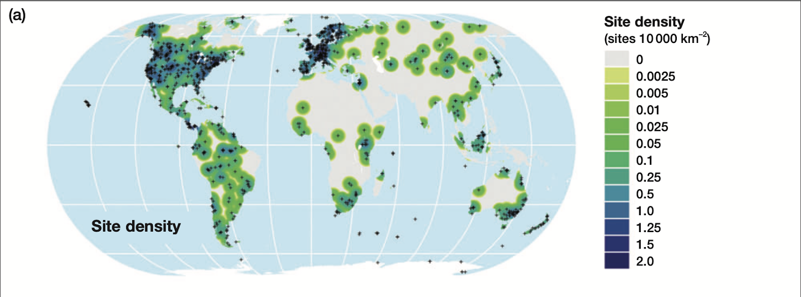

Bias in Ecological Research
A preface on my own thoughts and experience in research
Although I have been working in environmental research for the past few years (my own background involves amphibian disease), I am embarrassed to admit that I have yet to consider how bias is involved in my own field of research, especially as the research I have been performing does not directly relate to humans. I used to think that biases only impacted underrepresented communities of humans and thought about it in terms of socio-economic impacts, but have not thought of how biases affect conservation and ecology as well. The scales that I work on are so small and local, that I rarely consider wide scale impacts of our research, and in my undergraduate courses, I would absorb all of the ecological concepts without considering where this research takes place and how bias can be involved in the collection of this information. It is interesting to consider how bias arises in ecology and conservation on global scales.
The importance in representing all areas in ecology
Many studies establish ecological concepts that are meant to be applied to a wide range of environments regardless of location. Due to the fact that these principles and concepts are applied to such a wide range of habitats and systems, it is important to consider the origins of this research; however if there are biases excluding certain environmental systems, we must be wary and careful in applying these broad ecological ideas to any system.
Global patterns of bias
Around the world, there appears to be a pattern in which sampling and research locations are not evenly distributed - based on the most “popular” ecological research, determined by publications from 10 highly cited ecology journals. In 2012, Martin et al. analyzed the global distribution of 2573 terrestrial ecological studies and found that there are many biases in the locations chosen to conduct ecological research. The figure below is figure 1 from Martin et al. (2012), showing the proportion of studies in different land contexts.

This figure shows that agriculture and densely settled locations are largely underrepresented compared to the actual proportion of land that they take up globally. On the other hand, protected areas are largely overrepresented. Intuitively, it makes sense that scientists are focused on conservation in protected areas, as these areas are likely protected for a reason. However, this does not mean that other locations should be disregarded. The lack of research in densely settled populations is ironic, especially when considering that most research in densely settled areas are conducted in the “natural” parts of these locations (Martin et al. 2012), as the lack of research hinders conservation in these areas, and these locations are likely areas where anthropogenic impacts are deteriorating “natural” systems at faster rates. One would think that we would want to study anthropogenic impacts in densely settled areas more aggressively than areas that are already protected.
Additionally, on a country scale, “the Middle East was the most significantly understudied region based on land area, by a factor of 8.3, followed by Africa, Asia, and South America” (Martin et al. 2012). Countries with higher gross national incomes (GNI) are largely overstudied, with 90% of the studies taking place in countries in the 70-100th percentiles of GNI (Martin et al. 2012). (Zina Skandrani digs into the cause of the bias against North Africa and the Middle East in “Decolonizing ecological research”!)

Disregarding the environmental justice issues that these statistics imply, almost completely leaving out certain countries means that many different types of biomes are being left out of ecological research. When the same types of biomes are being repeatedly sampled, we must be careful to extrapolate ecological principles to all biomes. In particular, the biases against countries with low GNI has led to underrepresentation of desert ecosystems (Durant et al. 2012).
When considering the conclusions of ecological research, we must be vigilant and responsible in considering how biases in study location can affect the implications of the results of the study. If most studies are conducted in wealthy countries with temperate biomes, we cannot confidently apply those broad ecological concepts to less wealthy countries with desert biomes. When ecologists do not consider biases in study locations, they are also skewing conservation efforts, as conservation efforts are neglected in areas that are not being studied.
Additional Thoughts
As I was researching bias in ecological research, I also came across a paper addressing the understanding of bias among ecologists. According to the study, knowledge and understanding of bias among ecologists is low, and early career scientists are more likely to understand bias and measures to prevent it than senior scientists (Zvereva & Kozlov 2021). I would be curious to understand whether this is because early career scientists have more recently learned about biases more recently, or because when senior scientists first entered their careers, discussion about bias was less common. In either case, would continuing education on biases and avoiding biases help keep scientists more accountable? Zvereva and Kozlov introduce the idea of obligatory reporting measures taken against biases to enhance reproducibility, which links to the idea of datasheets for datasets, introduced by Gebru et al., which may not be a bad idea in the field of ecology.
References
Durant SM, Pettorelli N, Bashir S, Woodroffe R, Wacher T, de Ornellas P, Ransom C, Abaigar T, Abdelgardir M, Elalqamy H, Beddiaf M, Belbachir F, Belbachir-Bazi A, Berbash AA, Beudels-Jamar R, Boitani L, Breitenmoser C, Cano M, Chardonnet P, Collen B, Corniforth WA, Cuzin F, Gerngross P, Haddane B, Hadjeloum M, Jacobson A, Jebali A, Lamarque F, Mallon D, Minkowski K, Monfort S, Ndossal B, Newby J, Ngakoutou BE, Niagate b, Purchase G, Smaila S, Samna AK, Sillero-Zubiri C, Soultan AE, Price MRS, Baillie JEM. Forgotten biodiversity in desert ecosystems. Science 336:1379–1380 (2012)
Gebru T, Morgenstern J, Vecchione B, Wortman Vaughan J, Wallach H, Daumé III H, Crawford K. Datasheets for Datasets. CACM (2020). https://doi.org/10.48550/arXiv.1803.09010
Martin LJ, Blossey B, Ellis E. Mapping where ecologists work: biases in the global distribution of terrestrial ecological observations. Front Ecol Environ 10(4):195–201 (2012). doi:10.1890/110154
Skandrani, Z. Decolonizing ecological research. J Environ Stud Sci 8, 368–370 (2018). https://doi-org.proxy.library.ucsb.edu/10.1007/s13412-018-0501-x
Zvereva, E.L., Kozlov, M.V. Biases in ecological research: attitudes of scientists and ways of control. Sci Rep 11, 226 (2021). https://doi-org.proxy.library.ucsb.edu/10.1038/s41598-020-80677-4
Citation
@online{hahn2023,
author = {Hahn, Hope},
title = {Bias in {Ecology}},
date = {2023-12-10},
url = {https://h-hahn.github.io/blog/2023-11-06-my-first-post},
langid = {en}
}